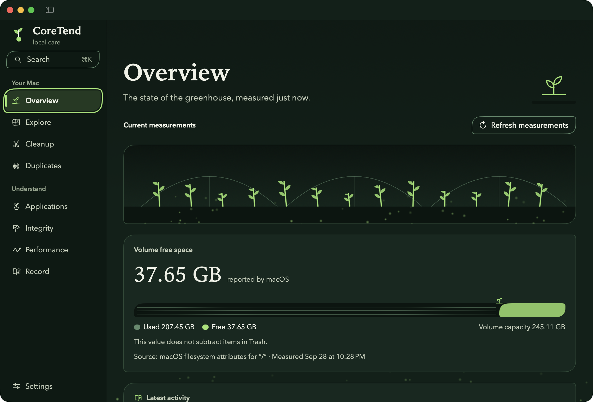

Motion with a cause
Roots descend as files are read. A moved file falls as a leaf into the Trash. A file that stays says why.
CoreTend 2.0
CoreTend observes your Mac, explains what it finds and prunes only what you choose. Nothing leaves your Mac; nothing is erased for good.
CoreTend 2.0 is ready and will be published soon. The download appears here on release day.
See what it doesmacOS 14 Sonoma or later · Apple silicon · English and French

Each part of your Mac has its place in the greenhouse, and its own way of showing what matters.
Roots descend as files are read. A moved file falls as a leaf into the Trash. A file that stays says why.
Leaves sway and pollen drifts while the window is in front — drawn by macOS itself, for almost no energy — and everything rests the moment you look away.
Reduce Motion, Low Power Mode or one switch in Settings: the greenhouse stands still, every piece of information still in place.
Every move goes to the macOS Trash, after your review and confirmation. You can put it back.
You choose each folder CoreTend may read. No password, no system extension.
No network, no account, no telemetry. Your paths and your history stay on your Mac.
CoreTend 2.0 is ready and will be published soon. The download appears here on release day.
macOS 14 Sonoma or later · Apple silicon · English and French